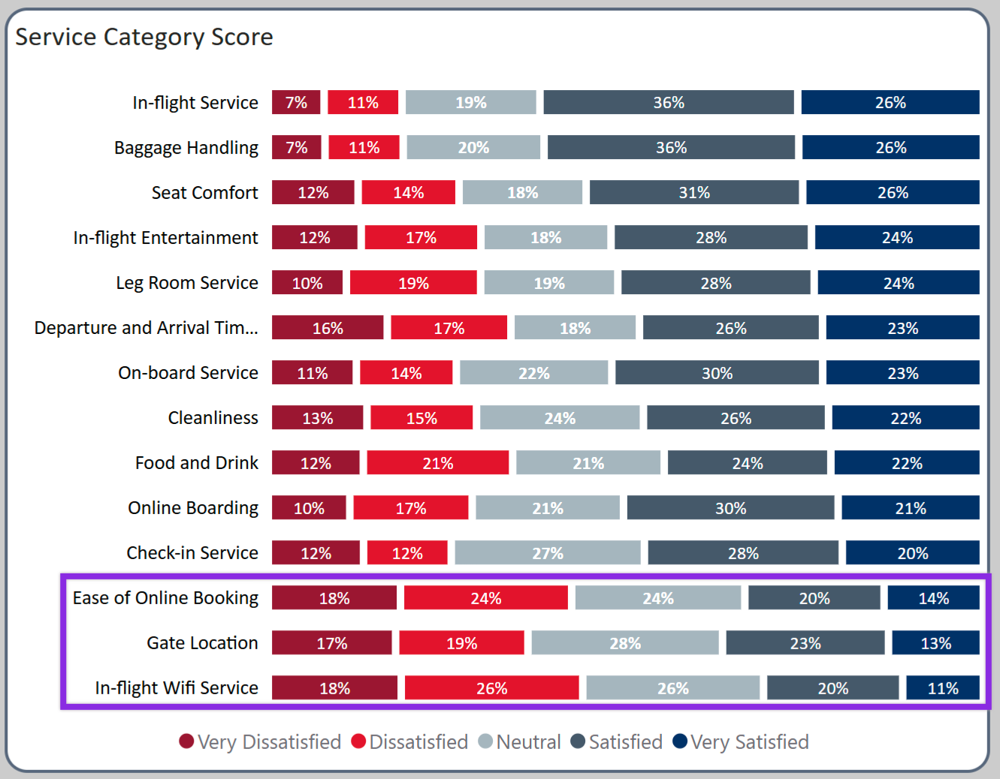
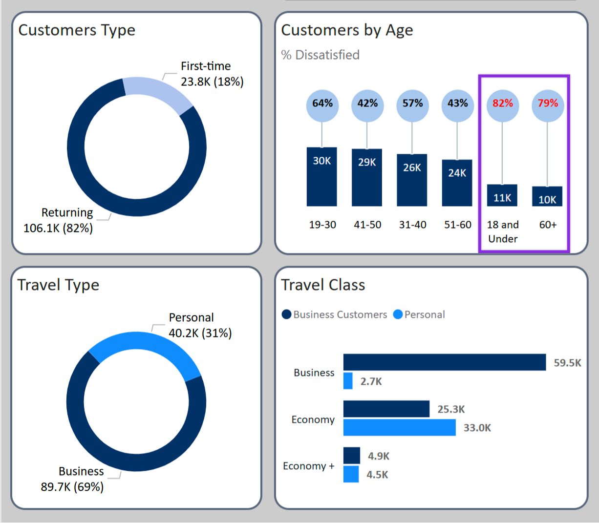

Service Quality Analytics
> Star Schema on 100K+ passenger survey records — isolating a High-Value Disconnect where Business Travelers were churning specifically due to Wi-Fi reliability while overall satisfaction scores showed green. Two completely different cohort interventions surfaced from a single dataset that blended averages were hiding.
Business Travel Share
70%
Volume & Revenue Concentration
First-Timer Dissatisfaction
70%
Digital Friction — Not Service
Survey Records
100K+
Likert Responses Processed
Primary Churn Driver
Wi-Fi
Hidden by Positive Comfort Scores
Healthcare Analytics — Transferable Methodology
The analytical framework here — structuring unstructured qualitative survey data into a Star Schema, applying NPS segmentation logic, and correlating touchpoint scores to overall satisfaction and churn — maps directly to patient satisfaction analytics. HCAHPS survey processing, CAHPS benchmarking, and CMS value-based care scoring use the same cohort segmentation and correlation architecture. The same High-Value Disconnect pattern appears in healthcare: overall hospital satisfaction scores can read positive while specific care touchpoints drive patient attrition and reimbursement risk simultaneously.
Interactive Intelligence
The Analytical Process
Power Query Transformation & Star Schema
Re-engineered 100K+ rows of unstructured survey data into a Star Schema — normalizing Likert scale responses, handling null values in baggage and delay columns, and structuring the data to enable cohort-specific aggregation. Flat spreadsheet averages were the problem; the Star Schema was the fix.
Cohort Segmentation & NPS Logic
Segmented passengers using Net Promoter Score logic to track Detractors and Promoters by demographic cohort — isolating Business class vs. Personal Economy passengers to surface how price sensitivity and use-case context produce fundamentally different service quality SLAs. The same overall satisfaction score maps to two completely different operational interventions depending on which cohort you inspect.
Correlation Analysis & Root Cause Isolation
Applied correlation analysis to map individual touchpoint scores to overall satisfaction and churn probability. Identified that "Ease of Online Booking" and "In-flight Wi-Fi" were the primary churn drivers — despite strong physical comfort scores. This is the core finding that blended averages were hiding: the service elements driving departures were not the ones leadership was tracking.
Service Strategy
- • Implement tiered Wi-Fi bandwidth allocation for Business Travelers — this is their make-or-break SLA, not a nice-to-have.
- • Deploy targeted onboarding for first-time travelers to reduce 70% dissatisfaction driven by digital friction, not service quality.
Digital Optimization
- • Redesign online booking UX to eliminate the friction points surfaced in the correlation analysis — satisfaction recovery starts before the flight.
- • Build cohort-specific CSI monitoring so service SLA failures are visible by passenger type, not just as an aggregate score.
Technical Toolkit
Impact Summary
"Satisfaction averages told leadership everything was fine. Cohort segmentation told them their most valuable customers were leaving — and exactly why. The finding wasn't in the data that was being reviewed. It was in the breakdown the dashboard hadn't been built to show."
GitHub RepositoryVisual Evidence

Demographics
Satisfaction by Passenger Cohort

Sentiment Analysis
Likert Scale Service Distribution